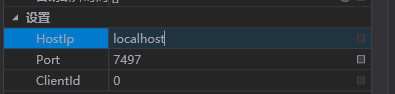
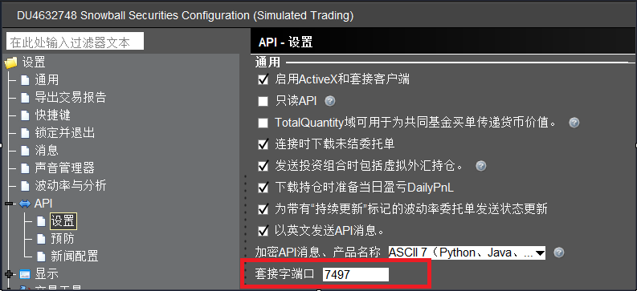
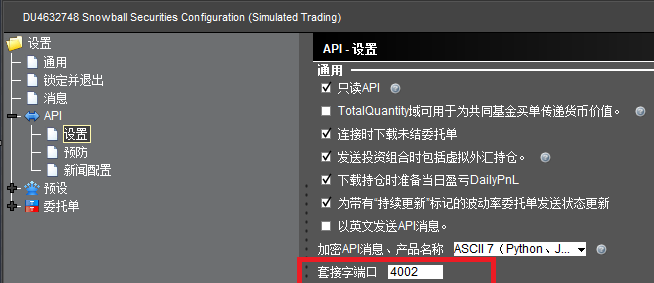
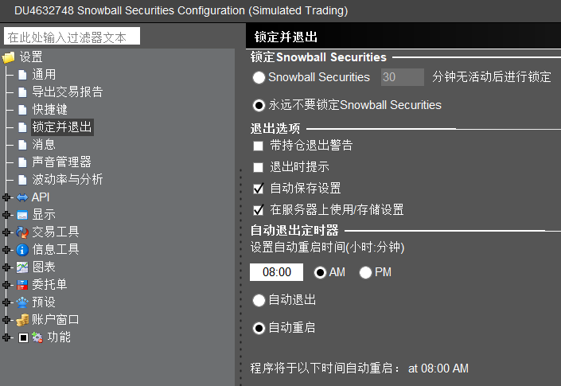
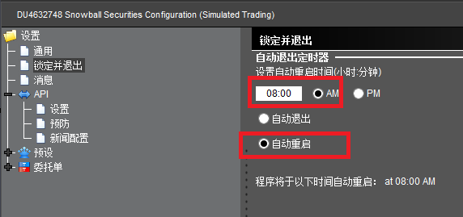

IB盈透(Interactive Brokers)
Provider设置

HostIp | 主机ip
IB tws或者IBGateway运行的主机的ip，一般如果是本机运行，填localhost或者127.0.0.1就行。
port | Api连接端口
IB tws或者IBGateway挂载的端口，从设置界面的API选项页获得。
TWS Api端口

IB Gateway Api端口

ClientId
连接到tws或者gateway的客户端id，如果只有一个客户端连接，填0即可。如果有多个，则需要填写不同的id以作区分。
注意事项
设置每日自动重启
IB规定，不论使用tws还是IBGateway程序，每天必须自动退出，或者自动重启。为了避免长时间未重启，程序可能会不稳定。
对于我们的需求，应该设置其在非交易时段自动重启。
如果没有修改成自动重启，SparksTrader无法自动登录tws或者IBGateway，也就无法自动重连成功了。
TWS自动重启

当tws自动重启后，sparkstrader会尝试进行重连。
IBGateway自动重启

账户多地登录
IB不支持账户的多地登录，登录1个以上tws，IBGateway，甚至于登录网站平台，都会导致现有登录连接的数据中断。
所以，当交易时，请注意保持只在一个地方进行登录，以免造成不可挽回的后果。